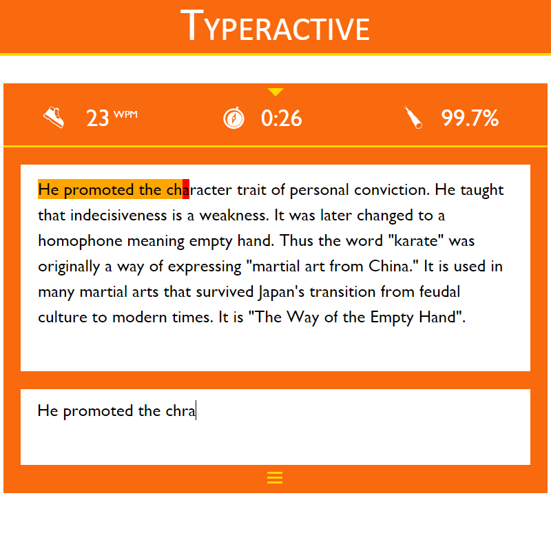
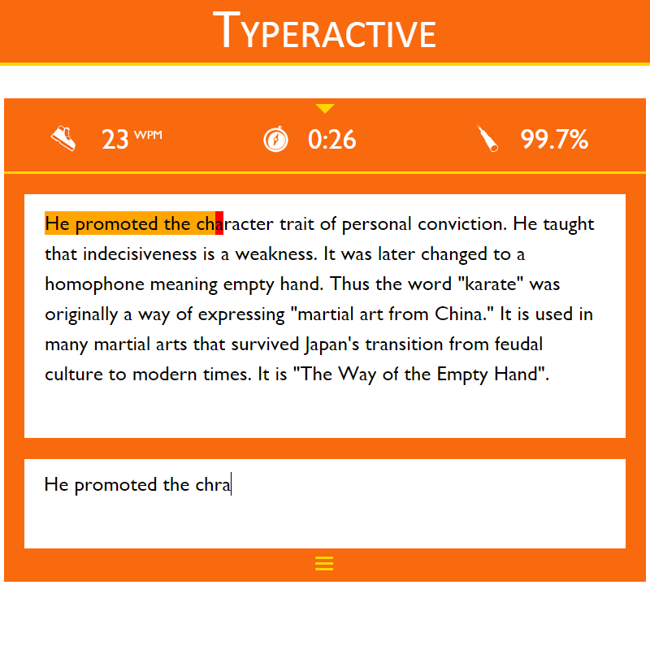

Aubrey
Python, Flask, scikit-learn, NLTK
{kind=link}
Peace Corps Connect
Android, Java, Parse
{kind=link}
{kind=link}
{kind=link}
We analyzed Peace Corps listings to create Tinder-like cards with an image that represents the listing. The image was obtained using the Flickr API. Based on the cards that the users like or dislike, we match them with certain listings.
Won the TripAdvisor Platinum Partner prize at IDHack 2015 at Tufts University.
Source code here.
Typeractive
JavaScript, HTML/CSS, PHP, MongoDB
 

{kind=link}
{kind=link}
{kind=link}
Typeractive is an online typing speed test.
There are dozens of topics for the content of the test itself, generated from Wikipedia articles using the Media Wiki API.
Try it out here.
Flick
Android

This Android application allows the user to control music playing in other apps through directional tilting of their device. It features tilting in four directions. Each direction can be assigned an action such as Next Song, Previous Song, Pause/Play, etc.
A Beta test group was run before this project was released to production:
See the final project on the Google Play Store.
Macro Recorder
Java
{kind=link}
5inarow
Python

This is an implementation of Gomoku (or Five-In-A-Row) built with Python and tkinter for the UI.
It features a computer mode as well as a 2 player mode.
The AI for the computer is implemented with the Minimax algorithm with alpha-beta pruning. The heuristic for the weighing of choices was developed through my own experience with the game.
Source code here.